Each project tells a story—of effort, creativity, and growth. From hands-on work to heartfelt ideas, these are more than just school tasks; they’re pieces of who we are, shaped by challenges and moments of inspiration. They reflect not only what we've done, but the path we're walking, step by step.
| Project Title | Description |
|---|---|
| DIY Coin Bank & Pen Holder | In the first semester of Philosophy, I crafted a fun yet functional Minion-themed coin bank and pen holder with a sharpener in the center. This project combined creativity with practicality, turning everyday objects into playful, character-driven designs. 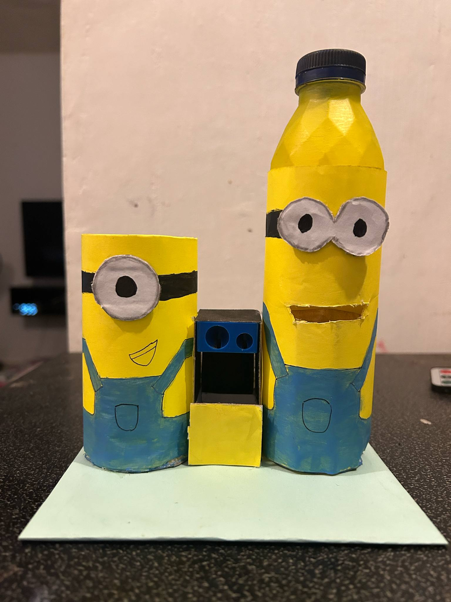 |
| Popsicle Stick Bridge | For General Math and Pre-Calculus Performance Task, We constructed a bridge using only popsicle sticks—demonstrating not just engineering skills but also the principles of physics and geometry. This project earned a perfect score, showing the power of precise planning and execution. 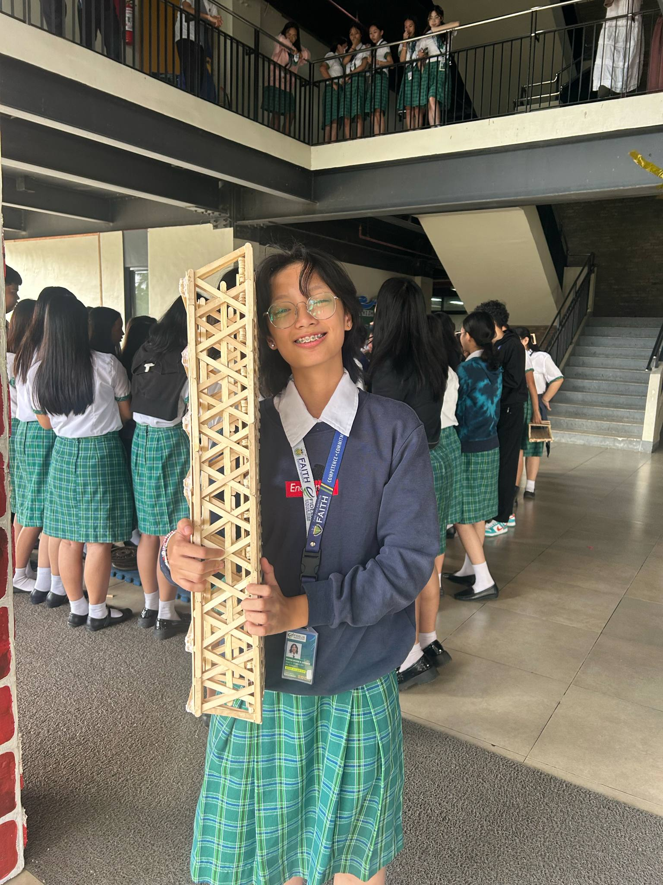 |
| Painted Mask: A Glimpse of Me | In Personal Development, I painted a mask that tells my story through colors and shapes, each detail representing a different talent, hobby, skill, and aspect of my personality. This piece is a visual reflection of my inner journey and growth. 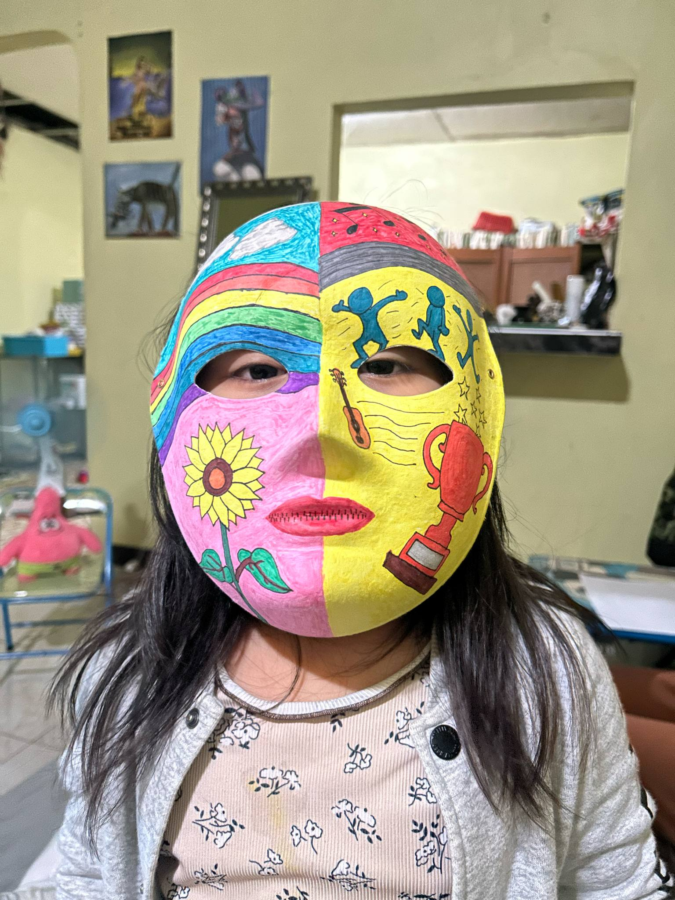 |
| Project Title | Description |
|---|---|
| Art and Craft Innovation | As part of our Philosophy subject, I designed and created a functional microscope using a recycled detergent bottle. This project demonstrates creativity, sustainability, and the practical application of philosophical inquiry into the nature of observation and perception. 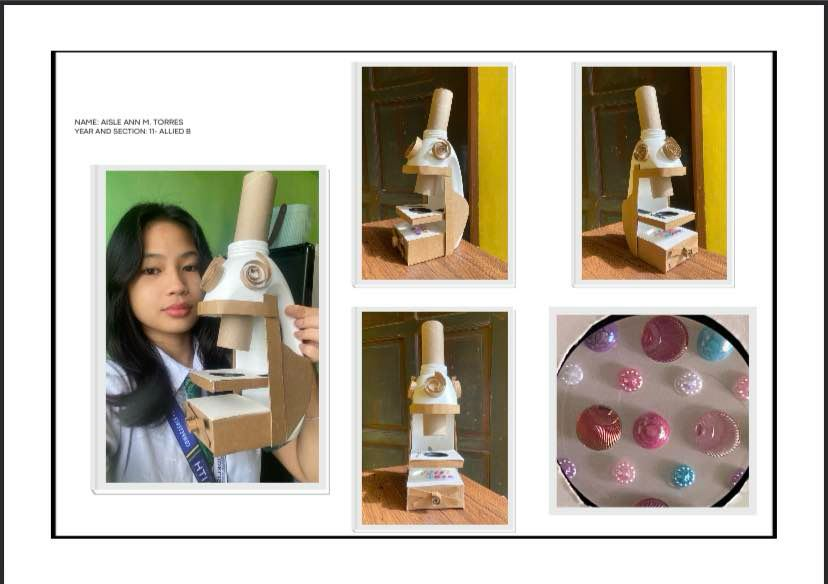 |
| Digital Brochure Design | I created my own brochure using Canva, incorporating digital art to effectively communicate the theme and purpose of our project. This task helped me enhance my skills in visual design and digital communication. 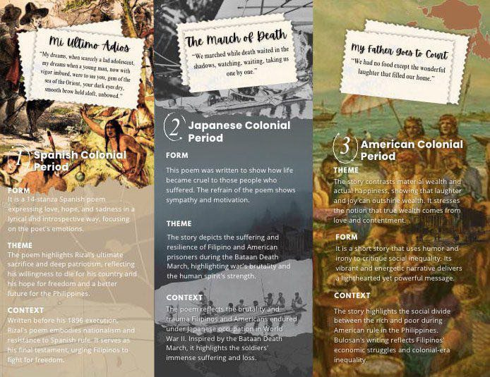 |
| Exploring Video Editing with Capcut | During our filming activities in the (USCP) subject, I explored video editing using the CapCut app. This experience allowed me to apply technical skills. 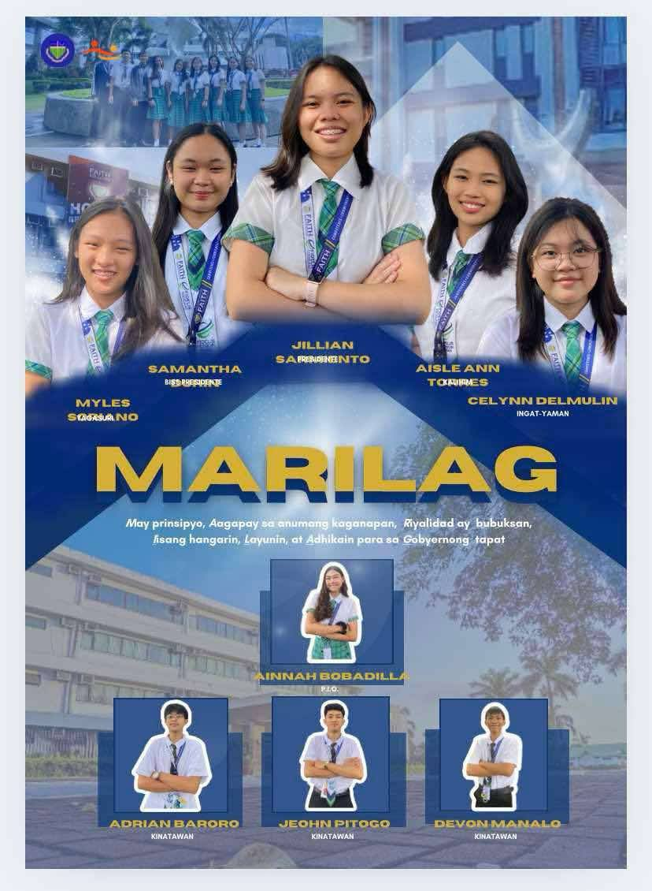 |
| Project Title | Description |
|---|---|
| Research Presentation for Defense: The Effects of Extreme Hot Weather in the Learning Process of Grade 11 Students in Jesus Is Lord Christian School | This project involved conducting a detailed research study to analyze the impact of extreme heat on students' academic performance. 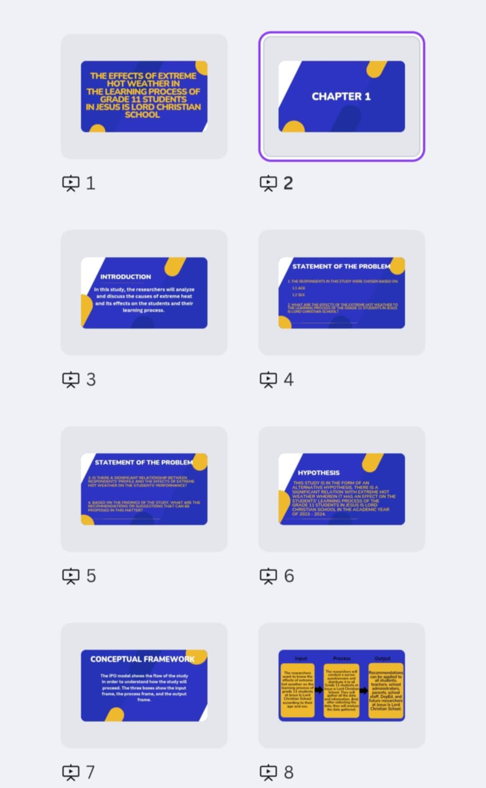 |
| Reporting Presentation on Historical Criticism | An informative literature report discussing the principles and history of Historical Criticism. It includes definitions, origins, and the importance of understanding literature through a historical lens. 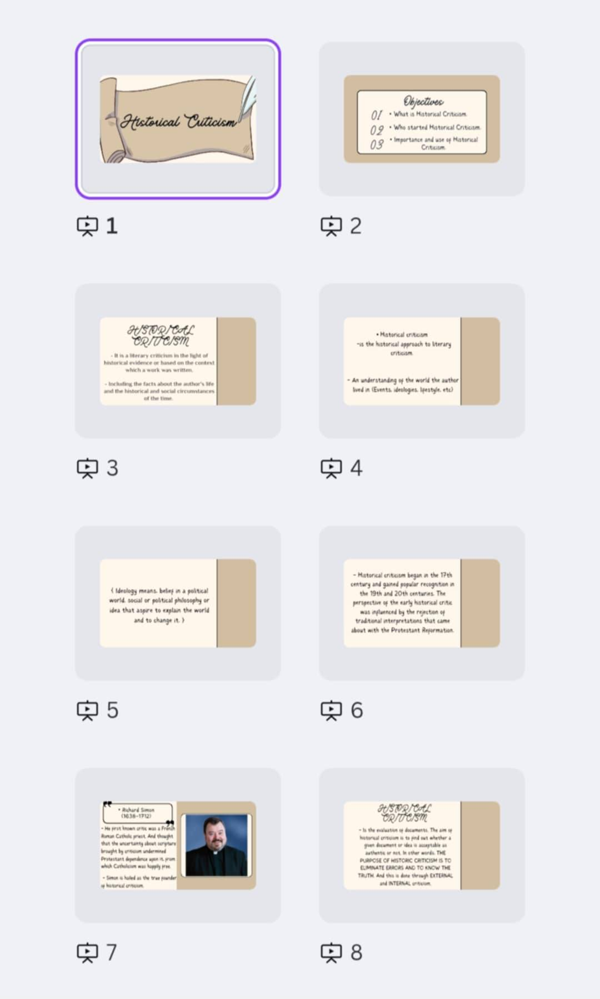 |
| Project Title | Description |
|---|---|
| Flight to freedom | This is one of my schoolworks in 21st CenLit. A girl stands at an open door, watching a bird fly free. Broken chains lie behind her, symbolizing freedom and new beginnings. 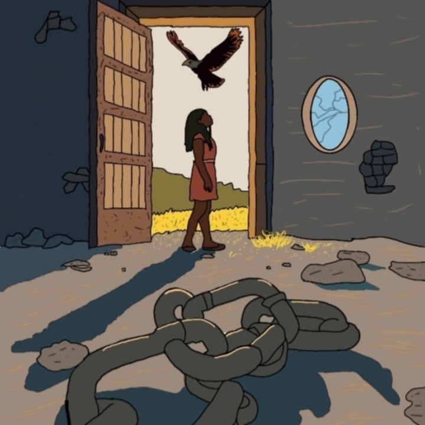 |
| My community | This is my project in UCSP. This is a 3D model of an urban roundabout with roads, buildings, sidewalks, and street decorations, likely a school project on city planning. 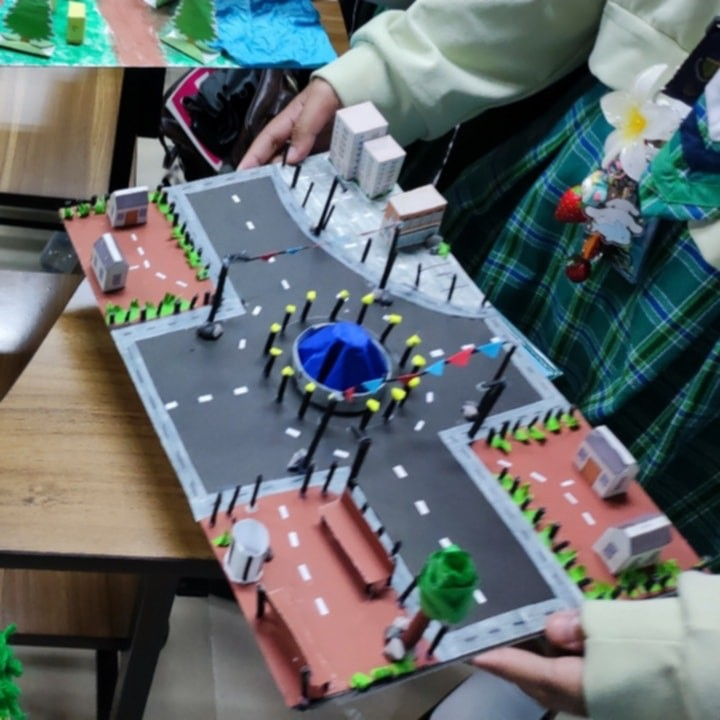 |
| Project Title | Description |
|---|---|
| Spoken Word Poetry | I won 1st place in spoken word poetry in grade 10 last year. 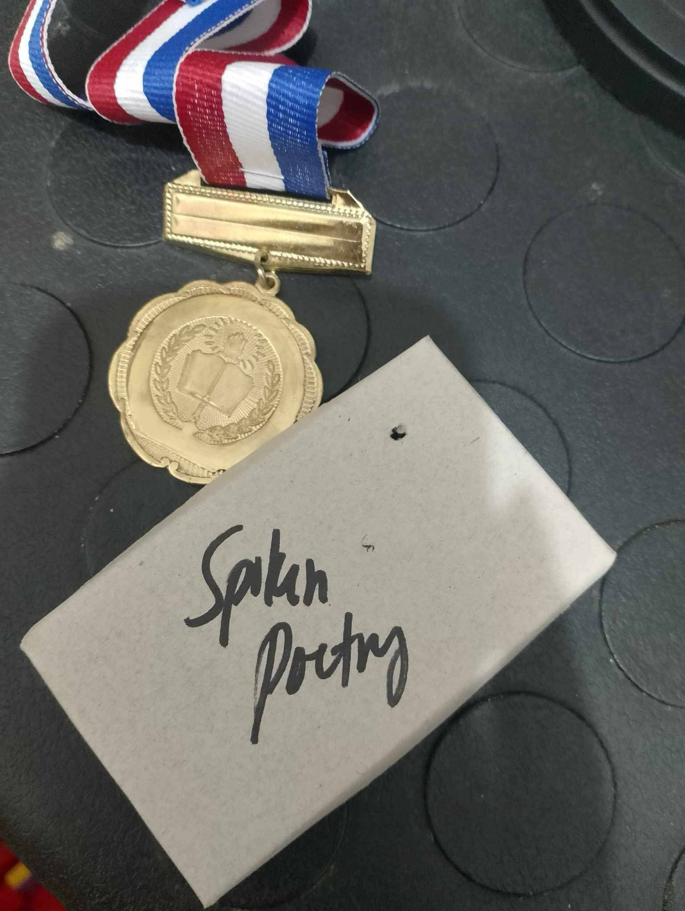 |
| Eutopia Society | I made eutopia out of cardboard material. |
| Project Title | Description |
|---|---|
| Philippine Literary Treasures - A Creative Journey | A brochure I designed and edited using Canva for our 3rd quarter performance task in 21st Century Literature. 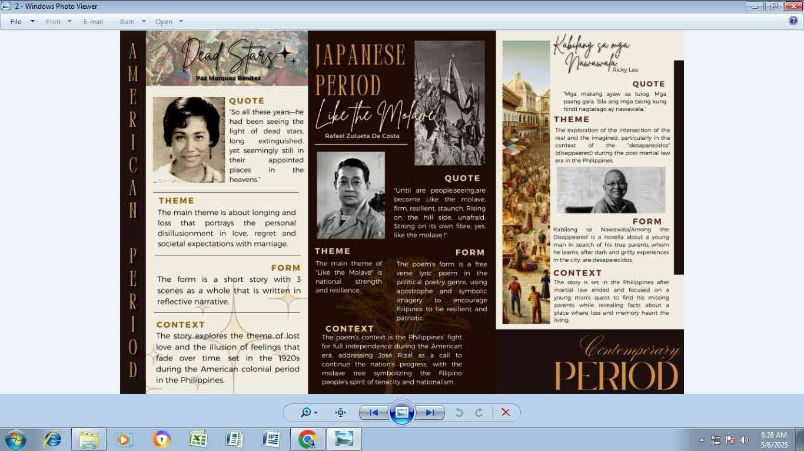 |
| Latina Party List | A PowerPoint presentation I edited using Canva, which was presented during our campaign for Pagbasa. 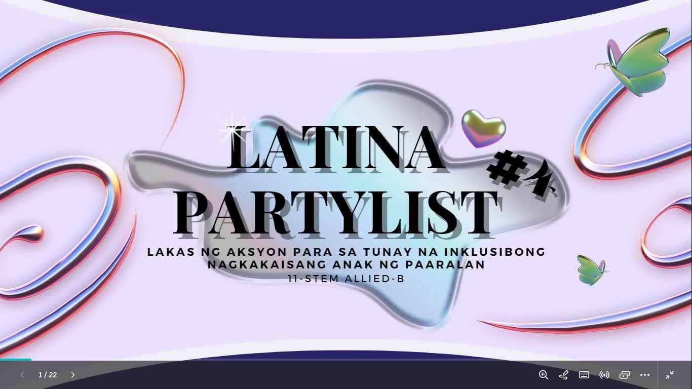 |
| A Cute Table Organizer | A DIY recycled table organizer I created for our 2nd quarter Philosophy performance task. 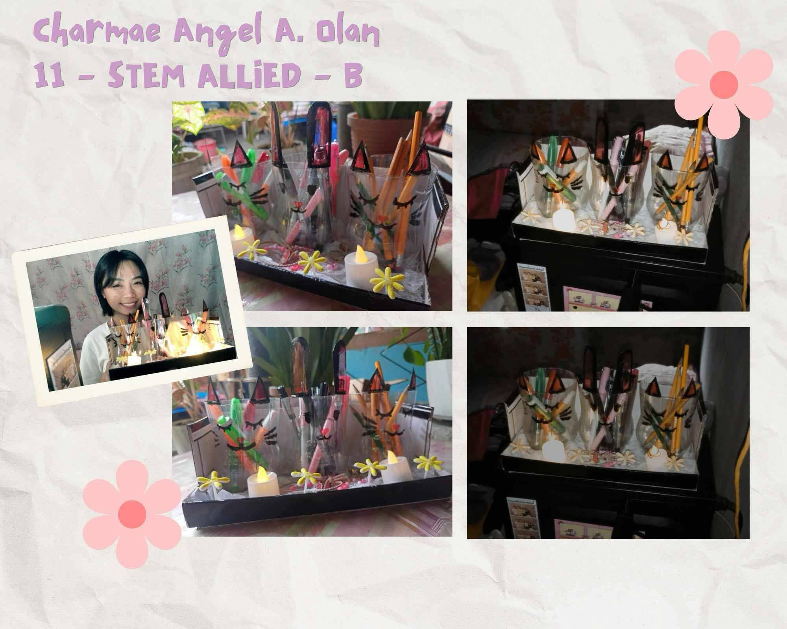 |
| Project Title | Description |
|---|---|
| "SABEL" - Short Film Role | Portrayed the lead character sabel in our school film. I challenged myself emotionally and artistically to give justice to her story. 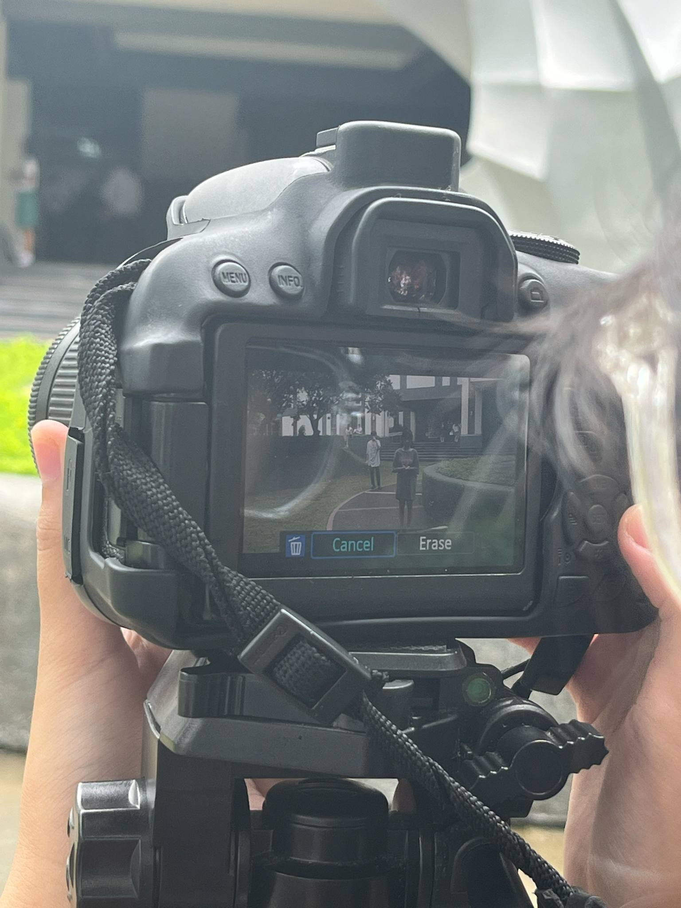 |
| Academic Excellence - With Highest Honors (Year 10) | Awarded with the highest honors for year 10 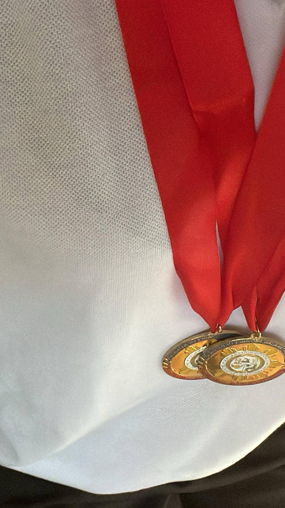 |